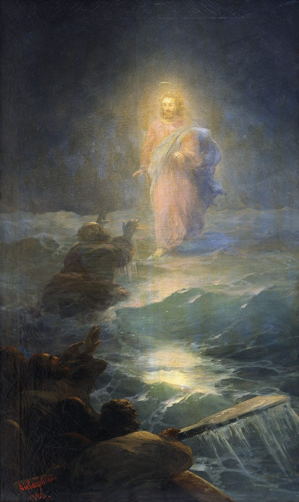

Matthew 14 — The Mister Translation

Aivazovsky painted the sea, almost exclusively, for sixty years — over six thousand canvases of it, calm and violent by turns — so a Bible scene from him is nearly always this one: the single moment the Gospels let a human being stand on the water he spent a career painting. ⚠ The reaching figure already out on the waves is usually read as Peter, mid-crossing rather than mid-sinking — the canvas holds the instant just before ‘he saw the wind’ (14:30), Christ’s own light the only source of light in the whole composition, the boat and its crew left in genuine dark.
{kind=link}
Translator’s Notes
A new Herod, and a precise title. This is not Herod the Great of chapter 2 — that Herod is a decade dead — but his son Antipas, who inherited Galilee and Perea when the kingdom was carved up and, unlike his brother Archelaus, never lost the post. KJV, ASV, and NIV all keep the technical Greek title ‘tetrarch’ here; NWT glosses it ‘district ruler,’ trading the loanword for a description of the office. ⚠ Nine verses later (v9) the same man is simply ‘the king’ — the popular title, not the paperwork — and this translation prints both without correcting either.
Ironic theology from a guilty conscience. Herod does not conclude Jesus is the Messiah; he concludes John has come back, which tells the reader more about Herod’s fear than about Jesus. ‘The mighty works’ (hai dynameis) is the identical phrase already tracked at 11:20–23 and 13:54,58 for what Jesus himself does — Herod has heard enough to be afraid, on secondhand report, of exactly the deeds his own household staff (v2, paides) would have known nothing about firsthand.
A flashback, clearly marked. Matthew steps back from ‘now’ (vv1–2) to explain a killing that has ALREADY happened — the arrest itself belongs to the past of this scene, not its present; the story only catches up to ‘now’ again at v10.
⚠ ‘Philip’, and a genealogical knot this translation does not try to untie. Josephus, describing the same marriage, calls Herodias’s first husband simply ‘Herod’ — a private citizen holding no territory — and never once calls him Philip. Some historians read Matthew’s ‘Philip’ as a mix-up with the better-known PHILIP THE TETRARCH (who ruled the region east of the lake, and who, in a further tangle, later married Herodias’s own daughter by this first marriage); others note that Herodian princes routinely carried more than one dynastic name, so that ‘Herod Philip’ may simply have been this man’s fuller name. See the encyclopedia entry on Herodias for the fuller family tangle. The readings are given; the genealogy Josephus and the Gospels do not quite agree on is not settled here.
John’s objection, in the imperfect tense. ‘Elegen’ — John HAD BEEN SAYING it, repeatedly, not once — that the marriage broke the Law (Leviticus 18:16 and 20:21, both already on these pages: a man may not take his brother’s wife while the brother lives). A prisoner kept alive specifically because Herod feared the crowd’s opinion of him (v5) is a detail the flashback keeps in view for what follows: it is not the king’s own resolve that finally kills John, but a promise made in front of witnesses he cannot afford to look weak before.
A birthday banquet, and a girl who is coached. Genesia — an annual birthday celebration — is a Greco-Roman court custom rather than a native Jewish one; the setting itself already signals which world this household has assimilated into. ‘Probibastheisa’ (v8) is not a neutral verb — the girl is PUT FORWARD, prompted, by her mother, who supplies the request before her daughter can improvise a lesser one. Douay renders it ‘being instructed before,’ keeping the sense of prior coaching that a plainer ‘prompted’ can lose.
A blunt word for what is left. Ptōma is literally ‘the fallen thing’ (from piptō, to fall) — the ordinary Greek word for a corpse, and a harder one than ‘body’ would be. Matthew does not soften John’s ending: a platter, a girl carrying it to her mother, and disciples who have to come collect what is left of their teacher themselves.
The last act of loyalty the text records for John’s own followers. They bury him and then go tell Jesus — the same two verbs, report first, that will open the very next scene (v13, ‘when Jesus heard’). The flashback closes exactly where it began: with what Jesus hears, and what he does in response to hearing it.
The Gospel’s own structural verb, sounding again. Anachōreō has already carried the magi home, Joseph to Egypt and then to Galilee (four times in chapter 2), Jesus himself away from John’s arrest (4:12) and away from a plot against him (12:15) — and now, a seventh time, away from the news of John’s death. The pattern the dictionary promised is now paid in full: a real threat, and the Messiah’s first recorded response to it is retreat, not confrontation.
⚠ The crowd will not be withdrawn FROM. A boat is faster than feet along a shoreline, and yet the crowds beat him there, or arrive close behind — on foot, from ‘the towns,’ plural, meaning this is not one village’s persistence but several converging on the same report.
The promise from chapter 9, paid. ‘Esplanchnisthē’ — the gut-level compassion first named for the ‘harassed and thrown down’ crowds at 9:36 — returns exactly where that entry said it would: immediately before the feeding that follows. Jesus goes to be alone and instead spends the day healing the very kind of need his own retreat was meant to escape.
⚠ A pun this translation cannot fully carry into English. The crowds recline ‘on the chortos’ — the grass, or fodder — and are then echortasthēsan, ‘grassed,’ the ordinary Greek verb for feeding animals on fodder, applied here to five thousand people. KJV and ASV both read ‘were filled’; NIV and NWT prefer ‘were satisfied’ — none carries the root-play across into English, which this note exists to flag rather than force.
An emphatic ‘YOU’. ‘Hymeis’ is not required by the Greek verb and is added only for weight — ‘YOU give them something to eat,’ not merely ‘give them something to eat’ — aimed squarely at the very disciples who had just proposed sending the problem into the villages.
⚠ Four verbs, in order, that will recur. Took — looked up — blessed — broke — gave: the identical sequence, in the identical order, consecrates bread at the last supper (26:26) and feeds four thousand more at the next miracle of this kind (15:36, not yet on these pages). Matthew is not varying his verbs; he is using the same four every time bread passes through Jesus’ hands toward a crowd.
⚠ Kophinos — twelve small, specifically JEWISH hand-baskets, one for each of the Twelve, left over from a meal in a Jewish region. When the pattern repeats in Gentile territory two chapters from now, Matthew switches the word entirely, to spyris, a larger provisions hamper with no ethnic association — and counts seven. The vocabulary itself seems to know which crowd it is feeding.
Five thousand, and an undercount stated as such. ‘Andres’ — MEN specifically — ‘besides women and children’ means the true crowd was considerably larger than the number the text actually reports; ancient headcounts of this kind routinely counted only the men.
⚠ Jesus COMPELS the disciples to leave. ‘Ēnankasen’ is a strong verb — forced, made, compelled — not a simple instruction; whatever reluctance the disciples had to leaving him alone with a crowd this large, it needed real pressure to overcome.
The mountain, alone, to pray. One of the very few places in this Gospel where Jesus’ own private prayer is narrated rather than assumed — the same ‘THE mountain’ (with the definite article, as at the Sermon’s opening, 5:1) that recurs at the transfiguration and at the very end of the book, always unnamed, always simply ‘the mountain,’ as though there is only one that matters.
Roman measurements in a Jewish story. A stadion is roughly 600 Greek feet, about 185 metres — ‘many stadia’ puts the boat well out from shore, several miles into open water. The night itself is counted the Roman way too: the ‘fourth watch’ is the last of four three-hour Roman divisions, roughly 3–6 a.m. — not the three-watch reckoning of the Hebrew Bible (Judges 7:19, ‘the middle watch,’ not yet on these pages). KJV and ASV both keep ‘the fourth watch of the night’ literally; NWT does the same. The disciples have been fighting the wind for most of the night by the time he comes.
⚠ ‘A ghost’ — genuine dread, not mere surprise. Phantasma (the ancestor of English ‘phantasm’) reflects an ordinary ancient sailor’s fear of the sea harboring hostile spirits; the disciples’ cry is terror at something malevolent, not simple astonishment at something unusual.
The promise from chapter 9, paid. ‘Tharseite, take heart’ — the identical word given to a paralyzed man and a bleeding woman at 9:2, 22 — now steadies two frightened boatloads of fishermen in a storm, spoken this time by the very one walking on the water that terrified them.
⚠ ‘It is I’ — and a background this translation does not force onto the reader. Egō eimi can be nothing more than ordinary self-identification, exactly as it functions elsewhere in Greek (‘it’s me’). But the ACT it accompanies is one the Hebrew Bible reserves for God alone — ‘who alone stretches out the heavens, and treads on the waves of the sea’ (Job 9:8, not yet on these pages); ‘your way was through the sea… yet your footprints were unseen’ (Psalm 77:19, not yet on these pages). Whether Matthew intends the plain sense, the theophanic echo, or both at once, this translation states the two readings and does not decide between them here — the same neutrality this project holds for John’s Prologue, where the identical question returns in its sharpest form.
One word, twice, and nothing in between. Peter asks to come; Jesus answers ‘Elthe’ — ‘Come’ — the shortest command Jesus gives in this Gospel, and Peter is already out of the boat before the sentence built around it is finished.
The promise from chapter 9, paid a third time. ‘Sōson me, save me’ uses the identical verb already tracked at 9:21–22 for the bleeding woman’s healing, and at 1:21 for Jesus’ own name unfolded (‘he will SAVE his people’) — Peter’s entire prayer, mid-drowning, is the same one word that names Jesus in the first chapter of this book.
⚠ Oligopiste — exactly the third of the four uses the dictionary already promised (after 6:30 and 8:26, before one more still to come at 16:8, not yet on these pages). It is not called unbelief — Peter did, after all, get out of the boat — but a diagnosis of SIZE: enough faith to start walking, not enough to keep walking once he notices the wind.
⚠ Edistasas, ‘you doubted’ — a rare verb, occurring only twice in the whole New Testament, both times in this Gospel, both times of people who have already seen enough evidence and hesitate anyway; its only other appearance is the Eleven on the mountain at the very end of the book, worshiping the risen Christ and still, ‘some doubted’ (28:17).
No rebuke this time — only presence. The storm of 8:23–27 needed a spoken command before it calmed; here the wind simply ekopasen, ‘grew weary and stopped,’ the moment Jesus and Peter are both back in the boat. No rebuke is recorded — his presence alone is enough this time.
The promise from chapter 2, paid in full. ‘Prosekynēsan’ — a seventh use of the gesture this library has tracked since the magi (2:2, 2:8 Herod’s lie, 2:11, 4:9–10 the devil’s demand, 8:2 a leper, 9:18 a ruler) — and the FIRST time the gesture is paired with the words it has been waiting for the whole book: ‘truly you are the Son of God.’ Every earlier bow left what the gesture meant unsettled; this one names it.
Gennesaret — a shore, not the lake itself. The fertile plain between Capernaum and Magdala also lends its name to the lake as a whole (‘the lake of Gennesaret,’ Luke 5:1, not yet on these pages) — two uses of one name easily confused; here Matthew means the shore the boat actually lands on.
The promise from chapter 9, paid a second time. ‘Tou kraspedou, the fringe’ — the Law’s own tassel, already tracked at 9:20, where a single bleeding woman touched it in secret and hoped no one would notice. Here whole villages ask for the identical touch in the open, publicly, as a matter of course — and the dictionary’s promised third use, at a very different moment (Jesus criticizing Pharisees for lengthening theirs for show, 23:5), has now arrived.
⚠ ‘Were healed’ — an intensified verb. Diesōthēsan carries the dia- prefix, ‘thoroughly, all the way through’ — a stronger cousin of the plain sōzō already tracked through this Gospel for both healing and salvation. KJV and ASV both read ‘were made whole’; NIV and NWT read ‘were healed’ — the shelf agrees on the outcome, less on how completely the verb itself insists on it.
The chapter’s real closing image. Not a private miracle but a whole district organizing itself around one detail of dress — ‘only let us touch the fringe’ — a scale of response the chapter has been building toward since a tetrarch first heard a rumor and grew afraid.
Patterns worth carrying forward
Where this translation keeps the exact / distinct words: “bowed down before” for proskyneō, unchanged since the magi; “the mighty works” for hai dynameis, matching 11:20–23 and 13:54,58; and “he withdrew” for anachōreō, now in its seventh appearance without a synonym substituted for it once.
Where it goes its own way: the Philip identification (v3) is presented as an open genealogical knot rather than corrected or silently smoothed; ‘it is I’ (v27) is given with its possible theophanic background stated, not asserted; and the chortos/echortasthēsan grass-pun (vv19–20) is flagged as a loss to English rather than papered over.
Echoes paid. Seven promises made in earlier chapters all land in this one: anachōreō’s seventh withdrawal (from 2:12–22, 4:12, 12:15); splanchnizomai’s return before a feeding, exactly as promised at 9:36; tharseō’s ‘take heart, it is I,’ named as still to come at 9:2 and now arrived; oligopistos’s third of four uses, after 6:30 and 8:26; sōzō’s ‘save me’ recalling both 9:21–22 and Jesus’ own name at 1:21; kraspedon’s second of three touches, after 9:20; and proskyneō’s seventh bow — the first ever paired with ‘truly you are the Son of God.’
Echoes planted. Distazō, ‘doubted’ (14:31), will sound only one more time in the whole New Testament — the Eleven’s own doubt on the mountain at the very end of this book (28:17). The four-verb sequence of the feeding — took, blessed, broke, gave — will recur at the feeding of the four thousand (15:36) and at the last supper (26:26) — both now on these pages. And kophinos, the small Jewish hand-basket counted twelve times here, is worth watching for its Gentile-territory cousin spyris, counted seven times two chapters from now.
Next in this book: chapter 15 — a Canaanite woman who will not take no for an answer, a hard saying about what actually defiles a person, and bread and fish multiplied a second time for four thousand more.